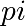
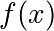
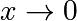
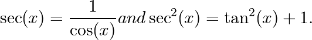

3.2. Sympy : Symbolic Mathematics in Python¶
Author: Fabian Pedregosa
What is SymPy? SymPy is a Python library for symbolic mathematics. It aims to be an alternative to systems such as Mathematica or Maple while keeping the code as simple as possible and easily extensible. SymPy is written entirely in Python and does not require any external libraries.
Sympy documentation and packages for installation can be found on https://www.sympy.org/
3.2.1. First Steps with SymPy¶
3.2.1.1. Using SymPy as a calculator¶
SymPy defines three numerical types: Real, Rational and Integer.
The Rational class represents a rational number as a pair of two
Integers: the numerator and the denominator, so Rational(1, 2)
represents 1/2, Rational(5, 2) 5/2 and so on:
>>> import sympy as sym
>>> a = sym.Rational(1, 2)
>>> a
1/2
>>> a*2
1
SymPy uses mpmath in the background, which makes it possible to perform computations using arbitrary-precision arithmetic. That way, some special constants, like , , (Infinity), are treated as symbols and can be evaluated with arbitrary precision:
>>> sym.pi**2
pi**2
>>> sym.pi.evalf()
3.14159265358979
>>> (sym.pi + sym.exp(1)).evalf()
5.85987448204884
as you see, evalf evaluates the expression to a floating-point number.
There is also a class representing mathematical infinity, called
oo:
>>> sym.oo > 99999
True
>>> sym.oo + 1
oo
3.2.1.2. Symbols¶
In contrast to other Computer Algebra Systems, in SymPy you have to declare symbolic variables explicitly:
>>> x = sym.Symbol('x')
>>> y = sym.Symbol('y')
Then you can manipulate them:
>>> x + y + x - y
2*x
>>> (x + y) ** 2
(x + y)**2
Symbols can now be manipulated using some of python operators: +, -,
*, ** (arithmetic), &, |, ~, >>, << (boolean).
3.2.2. Algebraic manipulations¶
SymPy is capable of performing powerful algebraic manipulations. We’ll take a look into some of the most frequently used: expand and simplify.
3.2.2.1. Expand¶
Use this to expand an algebraic expression. It will try to denest powers and multiplications:
>>> sym.expand((x + y) ** 3)
3 2 2 3
x + 3*x *y + 3*x*y + y
>>> 3 * x * y ** 2 + 3 * y * x ** 2 + x ** 3 + y ** 3
3 2 2 3
x + 3*x *y + 3*x*y + y
Further options can be given in form on keywords:
>>> sym.expand(x + y, complex=True)
re(x) + re(y) + I*im(x) + I*im(y)
>>> sym.I * sym.im(x) + sym.I * sym.im(y) + sym.re(x) + sym.re(y)
re(x) + re(y) + I*im(x) + I*im(y)
>>> sym.expand(sym.cos(x + y), trig=True)
-sin(x)*sin(y) + cos(x)*cos(y)
>>> sym.cos(x) * sym.cos(y) - sym.sin(x) * sym.sin(y)
-sin(x)*sin(y) + cos(x)*cos(y)
3.2.2.2. Simplify¶
Use simplify if you would like to transform an expression into a simpler form:
>>> sym.simplify((x + x * y) / x)
y + 1
Simplification is a somewhat vague term, and more precises
alternatives to simplify exists: powsimp (simplification of
exponents), trigsimp (for trigonometric expressions) , logcombine,
radsimp, together.
3.2.3. Calculus¶
3.2.3.1. Limits¶
Limits are easy to use in SymPy, they follow the syntax limit(function,
variable, point), so to compute the limit of  as
, you would issue limit(f, x, 0):
>>> sym.limit(sym.sin(x) / x, x, 0)
1
you can also calculate the limit at infinity:
>>> sym.limit(x, x, sym.oo)
oo
>>> sym.limit(1 / x, x, sym.oo)
0
>>> sym.limit(x ** x, x, 0)
1
3.2.3.2. Differentiation¶
You can differentiate any SymPy expression using diff(func,
var). Examples:
>>> sym.diff(sym.sin(x), x)
cos(x)
>>> sym.diff(sym.sin(2 * x), x)
2*cos(2*x)
>>> sym.diff(sym.tan(x), x)
2
tan (x) + 1
You can check that it is correct by:
>>> sym.limit((sym.tan(x + y) - sym.tan(x)) / y, y, 0)
1
-------
2
cos (x)
Which is equivalent since

You can check this as well:
>>> sym.trigsimp(sym.diff(sym.tan(x), x))
1
-------
2
cos (x)
Higher derivatives can be calculated using the diff(func, var, n) method:
>>> sym.diff(sym.sin(2 * x), x, 1)
2*cos(2*x)
>>> sym.diff(sym.sin(2 * x), x, 2)
-4*sin(2*x)
>>> sym.diff(sym.sin(2 * x), x, 3)
-8*cos(2*x)
3.2.3.3. Series expansion¶
SymPy also knows how to compute the Taylor series of an expression at
a point. Use series(expr, var):
>>> sym.series(sym.cos(x), x)
2 4
x x / 6\
1 - -- + -- + O\x /
2 24
>>> sym.series(1/sym.cos(x), x)
2 4
x 5*x / 6\
1 + -- + ---- + O\x /
2 24
3.2.3.4. Integration¶
SymPy has support for indefinite and definite integration of transcendental
elementary and special functions via integrate() facility, which uses
the powerful extended Risch-Norman algorithm and some heuristics and pattern
matching. You can integrate elementary functions:
>>> sym.integrate(6 * x ** 5, x)
6
x
>>> sym.integrate(sym.sin(x), x)
-cos(x)
>>> sym.integrate(sym.log(x), x)
x*log(x) - x
>>> sym.integrate(2 * x + sym.sinh(x), x)
2
x + cosh(x)
Also special functions are handled easily:
>>> sym.integrate(sym.exp(-x ** 2) * sym.erf(x), x)
____ 2
\/ pi *erf (x)
--------------
4
It is possible to compute definite integral:
>>> sym.integrate(x**3, (x, -1, 1))
0
>>> sym.integrate(sym.sin(x), (x, 0, sym.pi / 2))
1
>>> sym.integrate(sym.cos(x), (x, -sym.pi / 2, sym.pi / 2))
2
Also improper integrals are supported as well:
>>> sym.integrate(sym.exp(-x), (x, 0, sym.oo))
1
>>> sym.integrate(sym.exp(-x ** 2), (x, -sym.oo, sym.oo))
____
\/ pi
3.2.4. Equation solving¶
SymPy is able to solve algebraic equations, in one and several
variables using solveset():
>>> sym.solveset(x ** 4 - 1, x)
{-1, 1, -I, I}
As you can see it takes as first argument an expression that is supposed to be equaled to 0. It also has (limited) support for transcendental equations:
>>> sym.solveset(sym.exp(x) + 1, x)
{I*(2*n*pi + pi) | n in Integers}
Another alternative in the case of polynomial equations is factor. factor returns the polynomial factorized into irreducible terms, and is capable of computing the factorization over various domains:
>>> f = x ** 4 - 3 * x ** 2 + 1
>>> sym.factor(f)
/ 2 \ / 2 \
\x - x - 1/*\x + x - 1/
>>> sym.factor(f, modulus=5)
2 2
(x - 2) *(x + 2)
SymPy is also able to solve boolean equations, that is, to decide if a certain boolean expression is satisfiable or not. For this, we use the function satisfiable:
>>> sym.satisfiable(x & y)
{x: True, y: True}
This tells us that (x & y) is True whenever x and y are both True.
If an expression cannot be true, i.e. no values of its arguments can make
the expression True, it will return False:
>>> sym.satisfiable(x & ~x)
False
3.2.5. Linear Algebra¶
3.2.5.1. Matrices¶
Matrices are created as instances from the Matrix class:
>>> sym.Matrix([[1, 0], [0, 1]])
[1 0]
[ ]
[0 1]
unlike a NumPy array, you can also put Symbols in it:
>>> x, y = sym.symbols('x, y')
>>> A = sym.Matrix([[1, x], [y, 1]])
>>> A
[1 x]
[ ]
[y 1]
>>> A**2
[x*y + 1 2*x ]
[ ]
[ 2*y x*y + 1]
3.2.5.2. Differential Equations¶
SymPy is capable of solving (some) Ordinary Differential. To solve differential equations, use dsolve. First, create an undefined function by passing cls=Function to the symbols function:
>>> f, g = sym.symbols('f g', cls=sym.Function)
f and g are now undefined functions. We can call f(x), and it will represent an unknown function:
>>> f(x)
f(x)
>>> f(x).diff(x, x) + f(x)
2
d
f(x) + ---(f(x))
2
dx
>>> sym.dsolve(f(x).diff(x, x) + f(x), f(x))
f(x) = C1*sin(x) + C2*cos(x)
Keyword arguments can be given to this function in order to help if
find the best possible resolution system. For example, if you know
that it is a separable equations, you can use keyword hint='separable'
to force dsolve to resolve it as a separable equation:
>>> sym.dsolve(sym.sin(x) * sym.cos(f(x)) + sym.cos(x) * sym.sin(f(x)) * f(x).diff(x), f(x), hint='separable')
/ C1 \ / C1 \
[f(x) = - acos|------| + 2*pi, f(x) = acos|------|]
\cos(x)/ \cos(x)/